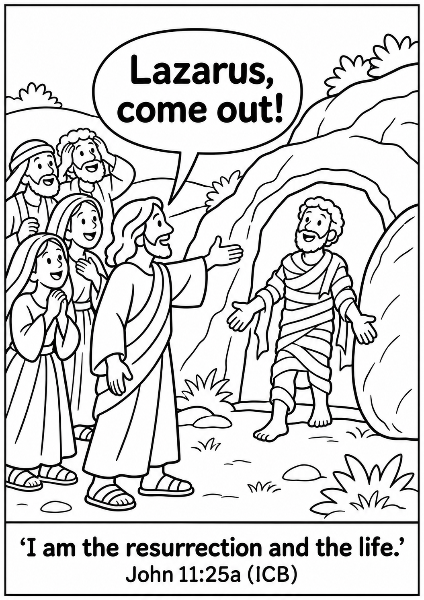

Intro – Remember the Miracles
4 minGive three clues, one at a time. Hold up an imaginary cup, make waves with your hands, then pretend to share bread. Let the children copy each action.
“Which miracle does this action remind you of?”
Possible answers Cup – Jesus turned water into wine. Waves – Jesus calmed the storm. Bread – Jesus fed the crowd.
“What do these stories show us about Jesus?”
Possible answers Jesus cares when people need help. Jesus has power over the wind and waves. Jesus made sure there was enough food for everyone.
“Today we’ll meet Jesus’ friend Lazarus and his sisters, Mary and Martha.”
Game – Wrap and Unwrap Lazarus
5 minObjective Cover your Lazarus’ skin and clothes, including their arms and legs, with toilet paper. Leave their hands, feet and face uncovered.
What you need One small roll of toilet paper per team, a timer and a clear space.
Set Up
Divide the children into two or more teams. Each team picks a willing volunteer to stand in the middle as Lazarus. Give each team an equal amount of paper. A leader can play Lazarus if the younger children prefer to do the wrapping.
Round 1 – Wrap Lazarus
- On “Go!”, start the timer and let teams wrap while their Lazarus stands still. Teammates can take turns passing the roll around.
- The first team to cover its Lazarus’ skin and clothes, apart from hands, feet and face, wins the wrapping round. At one minute, call “Stop!” and have everyone put down their rolls. If no team has finished, the team with the most coverage wins.
Round 2 – Lazarus, Come Out!
- Call “Lazarus, come out!” All teams start unwrapping together.
- Lazarus can tear the paper while teammates help peel it away. The first team to free its Lazarus wins the unwrapping round.
Pick up the paper together.
Bible Lesson – Jesus Raises Lazarus
12 minBible passage John 11:1–44
Big idea Jesus cares when we are sad, and he has power over death.
Watch the Story
Ask the children to listen for the words Jesus calls out at the tomb. Play the five-minute animated story from Saddleback Kids.
Use the YouTube button to watch the video when opening this lesson as a saved file.
▶ Open the Video on YouTubeLeader’s Read-Aloud Story
Lazarus was very sick. His sisters, Mary and Martha, sent a message to Jesus. By the time Jesus arrived, Lazarus had died and had been in the tomb for four days. A tomb is a place where someone’s body was laid after they died.
Martha went out to meet Jesus. Jesus told her, “I am the resurrection and the life.” When Jesus saw Mary and the people with her crying, Jesus cried too.
At the tomb, Jesus asked the people to move the stone away. Jesus thanked God for hearing him. Then he called in a loud voice, “Lazarus, come out!” Pause and invite the children to say those words with you. Lazarus came out, alive! He was still wrapped in strips of cloth, so Jesus told the people to take them off.
Talk About the Story
“What did Jesus do when he saw Mary crying?”
Possible answers Jesus cried too. He was sad with Mary.
“What did Jesus call out at the tomb?”
Possible answer “Lazarus, come out!”
“What happened when Jesus called Lazarus?”
Possible answers Lazarus came back to life. He walked out of the tomb, still wrapped in cloth.
Jesus Connection Jesus cried with Mary and her friends. We can talk to Jesus when we are sad too. When Jesus raised Lazarus, he showed that he has power over death.
Practise the Memory Verse
Say it in two parts and have the children echo you. Explain that resurrection means being raised to life. Say the whole verse together, then invite the older children to try it from memory.
Pray Together
“Dear Jesus, thank you for loving us. Thank you that we can talk to you when we are sad. Help us trust you. Amen.”
True or False Room Quiz
4 minChoose a True side and a False side of the room. Read one statement at a time and invite children to walk to their answer or point from their spot. Read the answer aloud before moving on.
- Mary and Martha were Lazarus’ sisters.
True. They sent a message to Jesus when Lazarus was sick. - Lazarus was at home when Jesus arrived.
False. Lazarus had been in the tomb for four days. - Jesus cried when he saw Mary and the others crying.
True. Jesus cried too. - The people moved a big wooden door away from the tomb.
False. The people moved a stone. - Jesus called, “Lazarus, come out!”
True. Jesus called out in a loud voice. - Lazarus came out of the tomb alive.
True. Lazarus was alive and still wrapped in strips of cloth.
Craft – Jesus Raises Lazarus Colouring Sheet
10 minBefore the Session
Print one A4 colouring sheet per child. Set out crayons or colouring pencils.
Colour and Retell
- Colour Jesus, Mary, Martha and the others watching Lazarus step out of the tomb.
- Read Jesus’ words in the speech bubble together. Invite children to use the picture to retell the story.
- Practise the memory verse printed at the bottom of the sheet.
“What happened when Jesus called, ‘Lazarus, come out!’?”
Possible answers Lazarus came back to life. He walked out of the tomb. Jesus showed his power over death.

Print the Lazarus Colouring Sheet (A4 PDF)